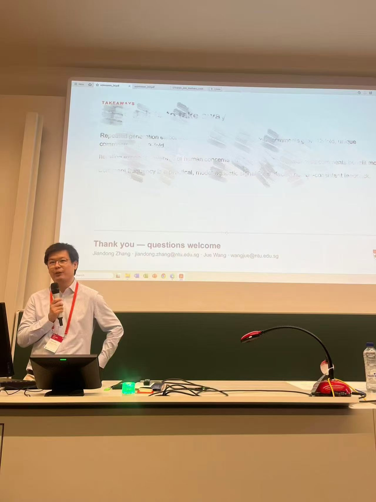
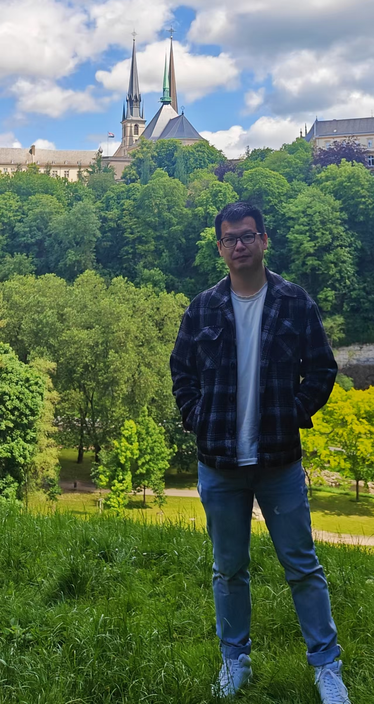

Scientometrics
Traditional scientometric and bibliometric methods, including citation analysis, research evaluation, disciplinary classification, and the measurement of interdisciplinarity.

RESEARCH FELLOW · NTU
Outside research:
Volleyball & music festivals.
I am a Research Fellow at the Nanyang Center for Public Administration, Nanyang Technological University (NTU), Singapore. My research began in scientometrics, focusing on how science is classified and evaluated, including journal subject classification and the measurement of interdisciplinarity.
Over time, my interests have expanded toward the broader science of science: how knowledge is produced, how researchers work, and how scientific opportunities are distributed.
I am now particularly interested in the impact of AI on science and bias in research. My current work examines who benefits from AI adoption, how LLMs participate in peer review, and how bias shapes scientific evaluation and research opportunities.
Scientometric methods remain a foundation of my work, while my questions increasingly concern the social and technological forces that shape science.
Nanyang Technological University
Nanyang Center for Public Administration · Singapore
Fraunhofer Society
Institute of Systems and Innovation Research · Karlsruhe, Germany
University of Chinese Academy of Sciences · China
School of Economics and Management · Doctor of Management
China Agricultural University · China
China Agricultural University Library · Master of Management
Sichuan University · China
School of Public Administration · Bachelor of Management
Traditional scientometric and bibliometric methods, including citation analysis, research evaluation, disciplinary classification, and the measurement of interdisciplinarity.
Machine learning, deep learning, and large language models (LLMs) for research and data analysis.
Processing, analyzing, and visualizing complex networks to explore their structure and patterns.
Proficient in processing and analyzing full-database datasets from OpenAlex and Web of Science.
AI & SCIENTIFIC INEQUALITY
How career age shapes the productivity gains associated with AI adoption in science
Exploring how AI adoption reshapes productivity gaps across career stages and technological eras.
Key finding Generative AI is associated with narrower publication gaps across career stages, while citation-impact gaps show no detectable convergence.
Jiandong Zhang & Jue Wang · Research in progressAI & RESEARCH EVALUATION
Consistency and Human Alignment in LLM–Generated Peer Reviews: An Iterative Folding Analysis
Using iterative folding to study how repeated LLM reviews accumulate, recur, and align with human feedback.
Key finding Repeated generation increases coverage but reduces precision; recurring comments are more likely to overlap with human feedback.
Jiandong Zhang & Jue Wang · Revised manuscriptSCIENTIFIC CAREERS & PRODUCTIVITY
Lotka’s Law Revisited: Workforce Demography and Cross-country Variation in Scientific Productivity Distributions
Extending Lotka’s law by connecting scientific productivity distributions with workforce demography.
Research in progressEARLIER WORK · SCIENTOMETRICS
Analyzing Journal Category Assignment Using a Paper-level Classification System
Examining journal classification and interdisciplinarity through paper-level research topics.
Source: research presentation · slides 12 & 15EARLIER WORK · HISTORY OF IDEAS
Contemporary bibliometric citation classics
Tracing the older publications that continue to shape bibliometric research.
Li Li, Jiandong Zhang, Liying Yang & Ronald Rousseau · PosterExploring how AI may affect knowledge integration and interdisciplinary collaboration differently.
Jiandong Zhang, Sonia Gruber, Rainer Frietsch
Journal of Data and Information Science, 10(2), 61–79.
Y. Liu, L. Yang, Jiandong Zhang, Z. Shen
Humanities and Social Sciences Communications, 12(1), 1–11.
Jiandong Zhang, Z. Shen
Scientometrics, 1–16.
L. Li, Jiandong Zhang, L. Yang, R. Rousseau
Scientometrics, 129(8), 5037–5046.
Y. Liu, Jiandong Zhang, L. Yang, Z. Shen
Chinese Journal of Scientific and Technical Periodicals, 34(6), 775–785.
Jiandong Zhang, L. Yang, Z. Shen
International Society of Scientometrics and Informetrics Conference · Conference paper.
Jiandong Zhang, Y. Liu, Z. Shen
Journal of Data and Information Science, 7(4), 1–2.
Jiandong Zhang, S. Chen, X. Xu, W. Zuo
Data Analysis and Knowledge Discovery, 5(8), 34–44.
30th Annual International Conference on Science and Technology Indicators
University of Antwerp · Belgium
AI Widens the Gap: How Career Stage Shapes the Benefits of AI Adoption in Science
International Conference on Social Computing
University of Oxford · United Kingdom
Analyzing Journal Category Assignment Using a Paper-level Classification System: Multidisciplinary Sciences Journals
19th International Conference of the International Society for Scientometrics and Informetrics
Indiana University · United States

BEYOND RESEARCH
I grew up in Dali, a small city in Yunnan, China, and never left my hometown until I went to university. Since then, my world has kept widening: new places, new people, new ideas. What I enjoy most is the process itself, the feeling of stepping into something unfamiliar and slowly making sense of it. For me, exploring the world and exploring research questions come from the same curiosity.
Outside research, you'll usually find me on the volleyball court, or somewhere in the crowd at a live rock show or music festival.